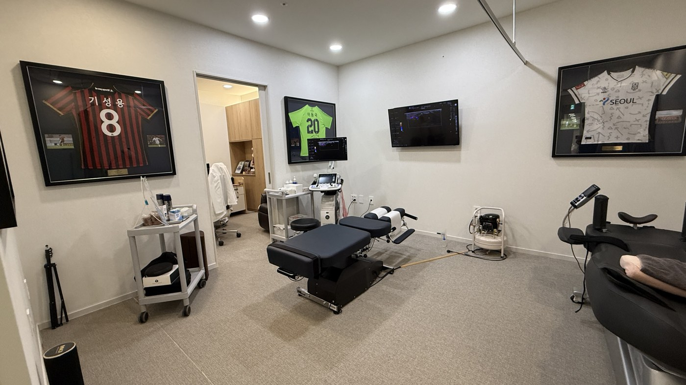
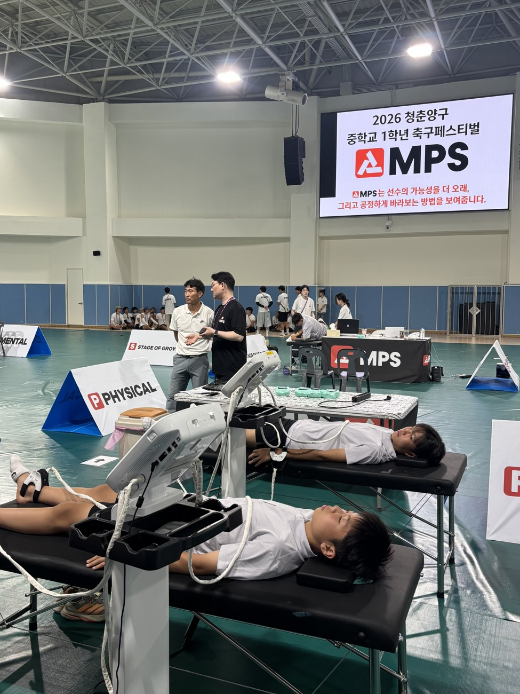
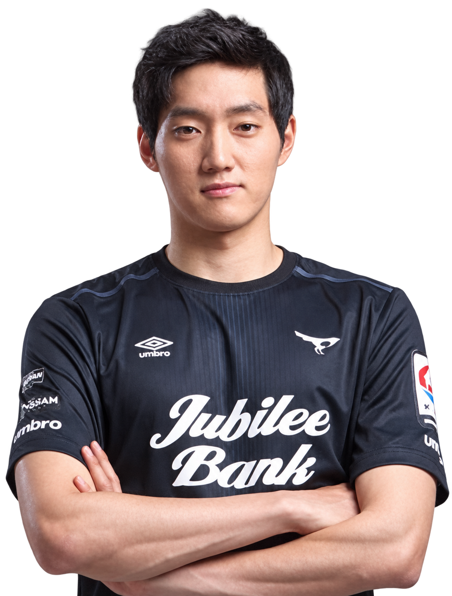
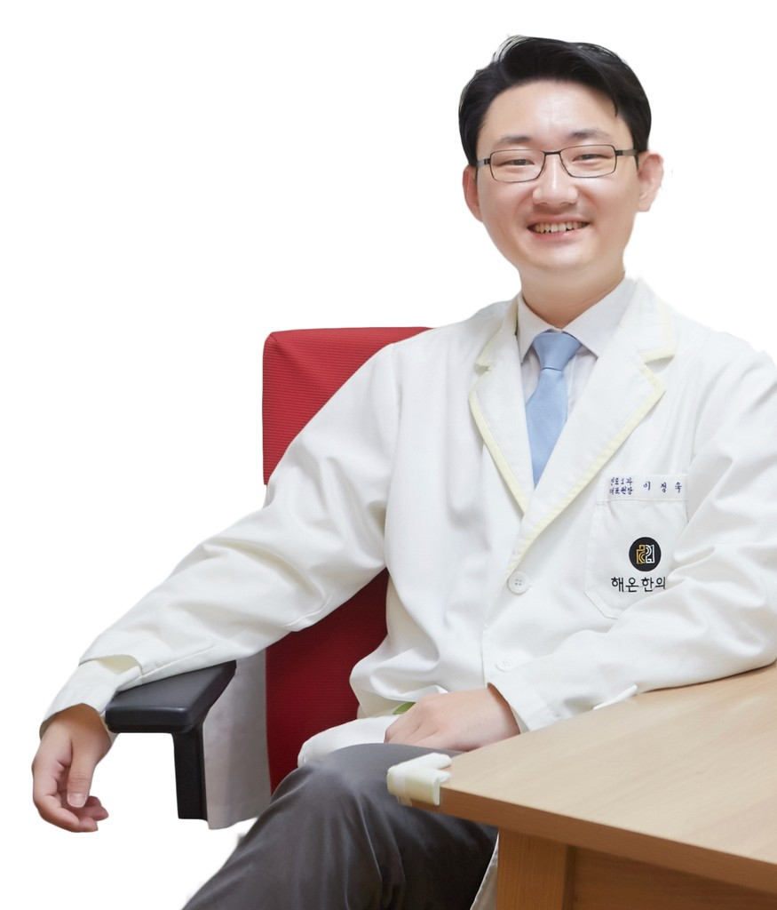

개인별 맞춤진료의 관점에,
스포츠과학을 더합니다.
개인의 몸과 생활을 함께 살피는 스포츠한의학의 진료 관점에, 성장단계·멘탈·피지컬 평가와 레슨센터 코치님의 관찰을 더합니다. 같은 나이와 같은 기록도 선수마다 다르게 읽고, 지킬 강점과 다음 과제를 개인별 성장플랜(IDP)으로 연결합니다.
사용 중인 팀과 선수
MPS가 쌓아온 선수 데이터를 바탕으로,
선수의 성장단계와 이전 기록을 함께 살핍니다.
지금의 체격과 기록 너머, 다음 훈련의 기준을 찾습니다.
MPS의 선수 육성 관점 · 바이오밴딩 2.0
바이오밴딩은 생년월일뿐 아니라
생물학적 성숙도가 비슷한 선수를 함께 보는 관점입니다.
MPS는 성장단계에 멘탈·피지컬 정보를 더하고,
레슨센터 코치님의 목표와 현장 관찰을 개인별 성장계획(IDP)에 연결합니다.
이 흐름이 MPS가 제안하는 바이오밴딩 2.0입니다.
급성장 전·중·후의 위치를 확인해 마음과 몸을 읽는 기준을 세웁니다.
성장단계에 운동능력·균형·회복 상태를 연결해 훈련과 관리 방향을 찾습니다.
성장단계와 멘탈성향, 경기 경험을 함께 살펴 선수에게 맞는 피드백을 찾습니다.
성장단계(S) 확인 → 멘탈(M)·피지컬(P) 해석 → 선수별 훈련·관리
MPS의 중심에는 선수 한 명을 이해하는 분석 결과가 있습니다.
S · 성장단계로 읽는 성장 리포트
같은 학년이어도 뼈나이와 성장속도는 다를 수 있습니다. 현재의 체격 차이를 재능의 차이로 단정하기 전에, 이 선수가 성장의 어느 시기를 지나고 있는지 살펴봅니다.
리포트에서 함께 읽어요현재 키·뼈나이·성장속도를 연결해 급성장 전·중·후의 위치와 예측 키 범위를 확인합니다. 급성장 중에는 가속·중반·감속의 흐름도 함께 살핍니다.
레슨센터 코치님이 함께 볼 질문“현재 체격과 성장단계를 고려하면, 이 선수에게 어떤 훈련 경험과 비교 기준이 필요할까?”를 함께 살펴봅니다.


P · 성장단계로 읽는 피지컬 리포트
몸이 빠르게 자라는 시기에는 성장속도와 함께 움직임과 회복 상태의 변화도 살펴야 합니다. 같은 운동 기록이라도 성장단계와 훈련 경험에 따라 다르게 해석합니다.
리포트에서 함께 읽어요바이오밴딩에 기능평가를 더해 운동능력·좌우 균형·회복 상태와 부상위험 관련 지표를 읽습니다. 같은 성장단계의 맥락과 선수의 이전 기록을 함께 살핍니다. 유연성·민첩성·근력·지구력·밸런스 중 무엇을 보완할지 선수별 결과를 바탕으로 설명합니다.
레슨센터 코치님이 함께 볼 질문최근 훈련량, 수면, 피로와 통증은 어땠나요? 검사 수치에 일상의 기록을 더하면 선수의 상태를 이해하는 데 도움이 됩니다.
M · 성장단계로 읽는 멘탈 리포트
약한 멘탈은 없습니다. 다만, 더 단단해질 부분을 제대로 찾고 강화해가면 그만입니다. 경기에서 긴장하거나 실수 후 위축되는 모습을 의지만으로 판단하지 않습니다. 성장단계와 멘탈성향, 선수가 경험하는 경기·훈련 환경을 함께 읽습니다.
리포트에서 함께 읽어요바이오밴딩에 스포츠심리평가·인지검사의 관점을 더해 강점과 과제를 살핍니다. 경기 긴장, 도움 활용, 경기 준비, 실수 후 회복, 자기 통제의 결과를 선수에게 맞는 멘토링 방향으로 연결합니다. MPS 보유 선수 데이터와 선수 자신의 이전 기록을 함께 참고합니다.
레슨센터 코치님이 함께 볼 질문“왜 또 실수했어?”보다 “오늘 잘 준비한 것은 무엇이었어?”부터 시작해 보세요. 강점을 확인하고, 다음에 연습할 한 가지를 함께 찾아갑니다.

MPS CENTER · LESSON DASHBOARD
담당 선수의 상태와 성장단계를 한눈에 보고,
선수별 결과를 IDP와 현장 메모로 연결합니다.
선수별 성장단계와 검사 결과, 남은 레슨 회차를 함께 살펴봅니다. 예약·출석과 검사 점검 일정도 확인합니다.
샘플대시보드 보기 ↗선수별 MPS 결과를 읽고 목표를 고릅니다. 레슨에서 본 반응을 기록하고, 월간 리포트와 다음 점검으로 연결합니다.
레슨센터 활용 안내 ↓BIO-BANDING 2.0 · INDIVIDUAL DEVELOPMENT PLAN
성장단계는 비교의 기준, M·P·S는 선수 이해의 자료.
IDP는 레슨센터 코치님이 선수와 함께 정하는 개인별 성장계획입니다.
선수 명단에서 성장단계와 최근 검사, 레슨 기록을 살펴봅니다. 출생연도와 성장단계, 선수별 MPS Report를 함께 읽어 확인할 항목을 정합니다.
결과와 면담을 바탕으로 지킬 강점 1개와 개선 과제 최대 2개를 선택합니다. 경기 전 준비 루틴이나 실수 뒤 다음 행동처럼 훈련에서 실천할 항목을 선수와 함께 정합니다.
레슨에서 본 반응과 선수의 한마디를 짧게 기록합니다. 팀 훈련·경기 일정과 개인 레슨의 부하, 피로·회복을 함께 확인하고, 6주 중간 체크와 12주 리뷰로 다음 목표를 조정합니다.
IDP · 12주 단위
공을 받은 뒤 다음 플레이로 연결하기
공을 받기 전 주변을 확인하기
실수 뒤 다음 행동으로 돌아오기
레슨센터 도입과 선수 관리에 관한 질문을 모았습니다.
성장단계에 따른 비교에서 출발해 멘탈·피지컬 결과와 레슨센터 코치님의 현장 관찰을 함께 읽고, IDP의 목표·실천·점검으로 이어가는 것이 MPS가 제안하는 방식입니다.
결과는 레슨센터 코치님의 판단을 돕는 참고 자료입니다. 기술·전술, 현장 관찰과 선수 면담을 함께 고려해 목표를 정합니다. 선발·출전·포지션을 자동으로 결정하지 않습니다.
센터 샘플에서는 지킬 강점 1개와 개선 과제 최대 2개를 정하고 레슨 관찰을 남길 수 있습니다. 실제 센터별 관리 항목과 제공 기능은 도입 상담에서 정합니다.
선수·보호자에게 목적과 공유 범위를 안내하고 승인된 범위에서 활용합니다. 센터별 조회 대상과 접근 권한은 도입 시 협의합니다. 샘플에는 실제 선수 자료가 없습니다.
선수 수와 이동 동선, 레슨 일정에 맞춰 진행 방식을 협의합니다. 제휴 의료기관 측정 일정과 회차 구성을 상담에서 정해주세요.
팀 훈련·경기와 개인 레슨을 한 선수의 전체 일정으로 함께 봅니다. 훈련·출전 시간, 체감 강도, 수면·피로·통증과 성장단계를 레슨센터 코치님과 공유하고, 이번 주 목표와 레슨 강도·회복 방향을 조정합니다. 현재 샘플에서는 코치 메모와 IDP 관찰로 기록하며, 팀 데이터 자동 연동은 도입 시 제공 범위를 협의합니다.
싱글 플랜과 연간 2회·4회 플랜이 있습니다. 측정 주기는 레슨 일정과 관리 과제에 맞춰 정합니다. 훈련 메모와 정기 측정은 별개입니다.
모든 플랜은 레슨센터 단위로 계약하며 비용은 별도 문의입니다. 측정 회차, 리포트, 대시보드·IDP와 교육·지원의 제공 범위는 제안서와 도입 상담에서 정합니다.
모바일은 화면으로 확인하는 결과, 스탠다드는 멘탈·피지컬·성장을 함께 정리한 결과지, 심화는 영역별 상세 해석을 살펴보는 형식입니다. 제공 리포트의 구성과 상담 범위는 선택 플랜과 도입 상담에서 확인합니다.
선수의 현재 상태, 변화와 다음 목표를 설명하는 기초 자료로 활용할 수 있습니다. 선수와 보호자에게 공유 가능한 범위를 확인하고, 결과와 레슨센터 코치님의 관찰을 함께 설명해주세요.
레슨센터 코치님과 함께하는 파트너십
선수 규모와 연령대, 레슨 일정부터 이야기해주세요.
측정과 결과 해석, IDP 활용 흐름을 함께 정합니다.
센터의 운영 과제를 듣고 선수·보호자에게 목적과 정보 공유 범위를 안내합니다. 제휴 의료기관 측정 일정과 회차를 협의합니다.
승인된 범위의 결과를 함께 읽고 레슨센터 코치님의 활용 흐름을 안내합니다. 레슨 일정에 맞춰 현장 기록과 재평가를 연결합니다.
센터와 현장에서 만나는 MPS
검사 공간에서 대회 현장까지.
측정 결과를 설명하고, 다음 관리 방향을 함께 정합니다.


팀원
축구 현장 경험, 스포츠한의학 진료, 데이터 기술이 함께
선수의 가능성을 더 입체적으로 살핍니다.

FIFA 축구의학을 한의사 최초로 수료한
팀닥터 서울대동초 축구부팀닥터(2023~)
축구선수 학부모(클럽, 학교, 프로산하 모두 경험)
가천대, 동국대 한의대 겸임교수
해온한의원 대표한의사, 스포츠심리상담사

스포츠마케팅박사 대한축구협회,
한국실업축구연맹 등 20여년 축구행정가
전국 유소년 대회 기획/운영 전문가
대한체육회 스포츠 개혁위원
예원예술대 객원교수

프로선수 출신 심리상담사
성남FC 축구선수 출신
현장 운영 및 고객 경험 담당
선수 경험을 바탕으로 함께하는 멘탈 상담
블로그
MPS 블로그

AI 스포츠 과학과 스포츠 한의학 결합한 MPS 개발
뉴스룸
다양한 미디어에서 조명한
MPS의 발자취를 확인해 보세요.
15개 기사 중 4개 표시
레슨센터 단위 계약
선수 규모와 레슨 일정, 필요한 관리 범위에 맞춰 제안합니다.
모든 플랜의 비용은 별도 문의해주세요.
연 2회 · 연 4회
비용 별도 문의
1회 측정·평가
비용 별도 문의
대시보드 · IDP · 정기 점검
비용 별도 문의
세부 제공 항목과 운영 조건은 센터 상담 후 확정합니다.